|
|
UML Model
The Unified Modeling Language provides a number of models to allow
the specification and design of software systems using an object
orientated approach. UML has become the de facto standard for the
modeling of software systems and is commonly understood by analysts and
programmers alike. The generic nature of UML does make it quite large
and (in some areas) complex to understand. Please refer to one of the
many available publications for more detailed information about the UML.
This implementation of UML allows a user with even minimal knowledge to
begin modeling systems. This is achieved by protecting the user from
many of the complex semantic rules defined by the UML standard. The tool
dynamically analyses models and automatically disables menu options that
would lead to the input of an invalid UML model. A model check is also
provided to help discover common errors that are better identified using
a deferred check.
To view the main multi-CASE help page click
here
|
|
|
|

UML Models
This section of the help page describes the various UML models supported by
the multi-CASE tool. Each model is designed to be used to perform
analysis/design of different aspects of a software system. Each model is
constructed using a combination of model elements,
which are discussed in the second part of this help document. The modeling
elements available are dependent upon the current UML model being developed.
There are however certain modeling element that may be used on all UML Models.
These are Notes, Constraints and
Tags.
The models within UML may be categorized as supporting -
- Structural Modeling
- Behavioral Modeling
- Architectural Modeling
UML however is designed to be used in a fashion most appropriate to the
problem, so these groupings are not strictly enforced.
The actual UML models supported by the multi-CASE tool are
Use Case models, Class
models, Collaboration models,
Sequence models, State
chart models, Activity models,
Deployment models and
Component models. Although some of these models actually have more than one
specific purpose, e.g. class models can be used as object models (simply by not
including any classes on the model). For general information about working with
diagrams within the QSEE environment click
here.
When a new UML model is created (by right clicking on the project folder and
selecting "Add UML Model") a top level model is created that contains a single
system package.
To add a new model to the top level package left
click on the package (or the diagram area) and select the appropriate option.
All models created at the top level will be added to the system package. See
example below.
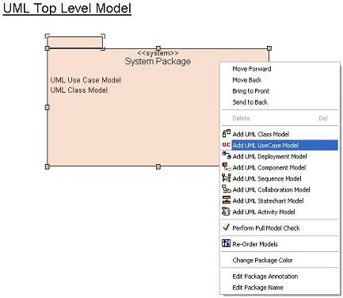
Use Case Models
Use Case Models allow the user to model the externally visible behavior of a
system. A typical use case model has a number of actors that initiate specific
use cases of the system. Use Case models are useful to present a conceptual view
of the main system requirements in a form that can be understood by most
stakeholders. The modeling elements that may be used on a Use Case model are
Actors, Use Cases,
Classes (ref), Communications,
Generalizations,
Realizations, Dependencies,
Collaborations, Packages,
Notes, Constraints and
Tags.
Below is an example of a UML Use Case model.

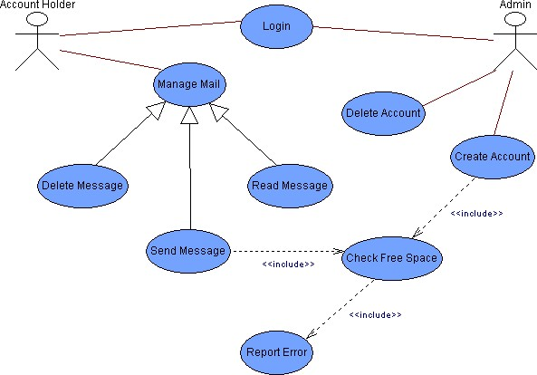
Class Models
Class models are used to describe the static structure of a system. Class
models are often seen as the primary modeling technique within the UML and tend
to include a large amount of detailed information about the system being modeled.
Class models usually show the classes of a system together with the
relationships between them. The modeling elements which may be used on a class
model are Classes, Associations,
Realizations, Dependencies,
Signals, DataTypes,
PrimitiveTypes, Exceptions,
Enumerations, Actors (ref),
Use Cases (ref), Collaborations,
Packages, Objects,
Links, Notes, Constraints and
Tags.
Below is an example of a UML class model.
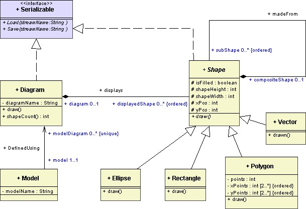
Collaboration Models
Collaboration models are used to show how instances of classes (often defined
within a class model) work together in order to satisfy certain behavioral
requirements of a system. i.e. how objects work together within a known
scenario. Collaboration models are often created as subordinates of
Collaboration elements (to show how related
elements collaborate in order to achieve a task). Collaboration models are very
similar to sequence models and can often represent
the same scenario. Collaboration models tend to be better at showing the amount
of coupling that exists between objects, but worse at showing the order in which
messages are exchanged between communicating objects.
The modeling elements which may be used on a collaboration model are
Objects, Links, Calls,
Notes, Constraints and
Tags.
Below is an example of a UML collaboration model.
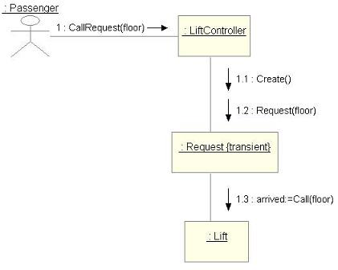
Sequence Model
Sequence models are used to show how instances of classes (often defined
within a class model) work together in order to satisfy certain behavioral
requirements of a system. i.e. how objects work together within a known
scenario. Sequence models are often created to as subordinates of
Collaboration elements (to show how related
classifiers collaborate in order to achieve a task). Sequence models are very
similar to collaboration models and can often
represent the same scenario. Sequence models tend to be better at showing the
sequence of messages exchanged between objects, but worse at showing the level
of coupling between interacting objects. The Y-axis of a sequence model
represents the passing of time.
The modeling elements which may be used on a sequence model are
Objects (active and passive), Calls,
Notes, Constraints and
Tags. The Active objects are
usually shown at the left hand side of the model and are the objects that
instigate the initial call (since they have an active lifeline by default).
Below is an example of a UML sequence model.
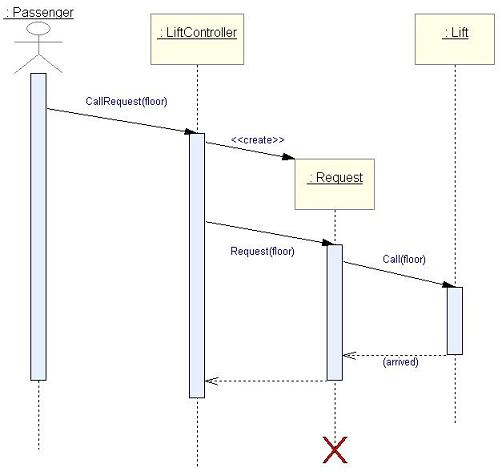
Statechart Model
A UML Statechart model is used to show the dynamic behavior of a system. A
statechart shows the different states which exist within the system and in what
circumstances each of these states is either entered and exited. The state of a
system often effects how it reacts to specific events that may occur and how the
system responds to these events. Statecharts are often created as subordinates
of classes, thus showing the dynamic behavior of the class
in question.
The modeling elements which may be used on a statechart model include
States, Transitions,
Notes, Constraints and
Tags.
Below is an example of a UML statechart model.
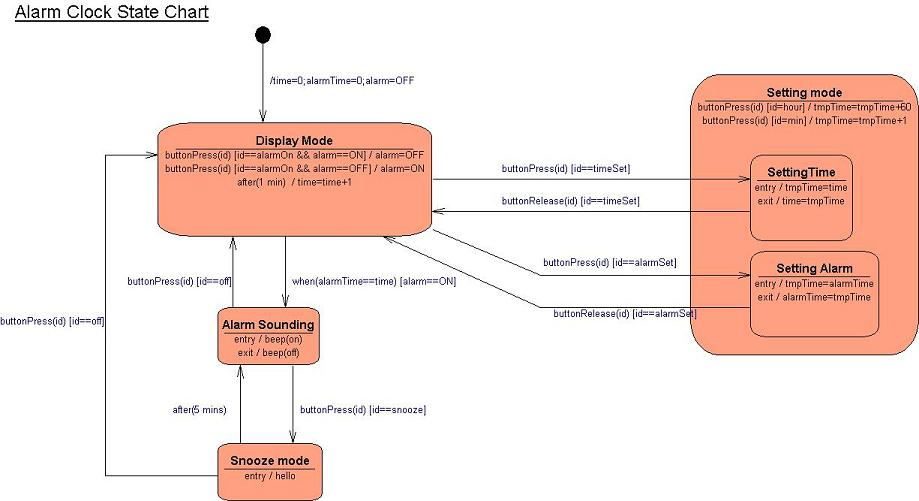
Activity Model
Activity models are used to model specific computational processes. i.e. they
allow the modeling of activities or algorithms. Activity models are essentially
an advanced form of a flowchart. These models are often created as subordinates
of operations to allow a more precise definition of the
behavior performed by the operation to be defined. An activity model provides a
sequence of actions, interspersed with flow-control logic.
The modeling elements which may be used on a activity model include
Action States, Transitions,
Objects (flow), Notes,
Constraints and Tags.
Below is an example of a UML Activity model.
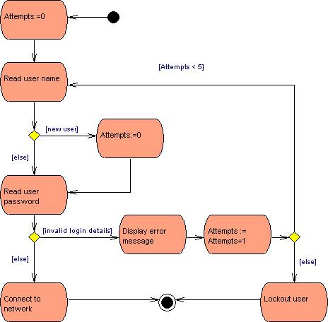
Component Model
Component models are used to help model the organization of the software
components within a system. A component model is typically used to show how
classes are combined into one or more components and how each component is
physically implemented within the distributed system. i.e. where components are
implemented within the distribution files.
The modeling elements which may be used on a component model are
Components, Artifacts,
Classes (Ref), Generalizations,
Realizations, Dependencies,
Packages, Notes,
Constraints and Tags.
Below is an example of a UML component model.
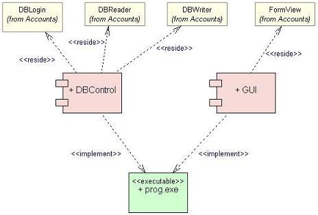
Deployment Model
Deployment diagrams are used to help model physical or architectural aspects
of a system. They are typically used to model hardware devices of a system and
to show how software components are deployed across the available devices.
Deployment models can be used to show the static architectural structure as well
as the run-time location of component instances.
The modeling elements which may be used on a deployment model are
Nodes, Components,
Artifacts, Node Instances,
Component Instances, Objects,
Associations,
Generalizations, Realizations,
Dependencies, Packages,
Notes, Constraints and
Tags.
Below is an example of a UML deployment model.
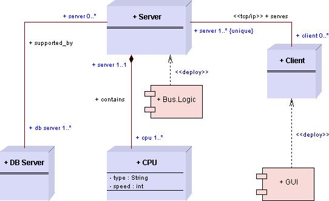
UML Model Elements
This section of the help page describes the specific model elements that can
be used within the various UML models. Some of these elements can be used on
several models, whereas others are only ever used on one specific model. Nearly
all model elements have a visibility value of private,
protected, package or public. This
visibility is represented by prefixing the element names with -, #, ~ or +
respectively.
The available model elements generally belong to one of several 'groups' of
elements, all members of each group tend to behave or be used in a similar
manner. These common element groups are described below. For general information
about working with diagrams within the QSEE environment
click here.
Classifiers
Within the UML the most commonly used set of elements are classifiers. There
are a number of different types of classifier, each of which is designed to be
used in a certain way or on certain UML models. Despite subtle differences there
is much commonality with respect to how classifiers can be used within the
modeling environment, and the type of options provided within their menus etc.
Classifiers are elements that declare and group a number of related
features, such as attributes and operations. Classifiers
are often linked using various relationships
including associations, generalizations, dependencies and realizations. Since
classifiers can be involved in generalization relationships they can all be
identified as being root (top of a generalization hierarchy), leaf
(bottom of a generalization hierarchy) or abstract (may not be directly
instantiated). Classifiers are represented by named graphical node shapes, such
as Rectangles and Ovals. Each different classifier has its own specific
notation.
The elements within UML which are kinds of classifiers are
Classes, Interfaces, Signals,
Exceptions, DataTypes,
PrimitiveTypes, Enumerations,
Packages, Nodes,
Components, Artifacts, Use Cases,
Actors and Collaborations.
States
The UML provides a number of elements which are based on a common state
element. Generally a state is used to model a situation where a set of
circumstances are known to be true. A typical system or parts of a system goes
through a number of recognizable states during execution. To model this dynamic
nature of a system's changing state UML provides a number of state based
elements that appear on either a statechart model
or an activity model.
Transition relationships allow the modeling of the change from one state to
another.
The different kind of state elements provided within UML are
States, Initial States,
Final States, History States,
Synchronization States,
Choice State, Junction States,
Fork States, Join States,
Action States, Decision
State and Merge States.
Instances
The UML allows run-time scenarios to be modeled and snap shots in time to be
modeled. In order to support these behavioral views a number of modeling
elements are provided which allow classifiers to be
represented as run-time instances. For example, at run time a class element is
instantiated as an object, therefore during modeling an Object
element is provided to allow the run-time instantiation of the
Class to be represented. Instances are typically represented by the same
graphical shape as the classifier that they represent, often identifiable by a
lighter coloring.
The kinds of instances provided within the UML tool are
Objects, Node Instances and
Component Instances.
Features
A number of elements within the UML are used to define the characteristics of
the element in which they are contained. These are commonly referred to as
features and are usually declared within a classifier.
A feature is an element which helps define the structure and behavior of the
classifier, or an instance of the classifier, in which it is contained. The type
of features used are dependent on the kind of classifier in which they are
declared, for example Attributes may be declared within
a Class, but not within an Interface.
Features are represented on the models as textual words, contained within the
host classifier.
The kinds of features commonly used within the UML are
Attributes, Operations,
Receptions, Enumeration Literals,
Attribute Values, and
Extension Points.
Relationships
Within the UML relationships can be created between elements. There are
several types of relationship each having its own notation, appropriate usage
and connectivity rules. Fundamentally however all relationships are used to
identify that one element is related (in some way) to another element. All the
relationships are represented as graphical links, linking from a source to a
destination element. Various end decorators are used along with varying
line-styles to show the specific types of relationship.
The kinds of relationships available within the UML are
Associations,
Generalizations, Dependencies,
Realizations, Classifier
Roles, Links, Calls and
Transitions.
Common Elements
There are three elements that can be used within all UML models. These three
are Notes, Constraints and
Tags. All of these elements are used to add additional information to one or
more other elements residing on a model. Notes provide an
informal way of annotating model elements. Constraints
provide a more formal way of specifying restrictions to be applied to model
elements. Tags allow (often platform/organizational) specific
information to be attached to elements.
Element Descriptions
This section contains a description of each modeling element available within
the UML tool.
Class
Definition: A class is a kind of classifier used to define a set of
objects that have the same features, behavior, relationships and semantics.
Since classes are just a special kind of classifier
they can be involved in generalization
relationships, have associations and be specified as
being abstract, leaf, root etc. Classes may contain
attributes, operations and
signal receptions. Classes may also contain an
underlying statechart model and/or
activity model to help model the behavioral nature
of the class. Objects may be used to model run-time
instances of classes.
Representation: A class is represented by a rectangular shaped node
that is (by default) yellow in color. It is split into three compartments, the
top part holding the name of the class, the middle part holding the attributes
contained by the class and the bottom part holding the operations/receptions
defined within the class. e.g.
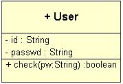
Creation: A class is added by right clicking on a
class model diagram editor or on the class model icon
within the project tree and selecting the "Add Class" option from the menu.
Position the class outline where you wish it to be placed on the diagram and
left click, enter the name when prompted and click "OK".
Rules: A class must have a unique name within its namespace (i.e. the
package in which it is defined, rather than the specific model on which it
exists). Classes that are specified as being abstract cannot
also be specified as being leaf (this is prevented by the user
interface).
Operations: Move Forwards/Backwards, Bring to Front, Send to Back,
Delete, Add Attribute, Add Operation, Add Signal Reception, Re-Order (features),
Add Association, Add Generalization, Add Realization, Add Dependency, Realize
Interface, Is Abstract Class, Is Leaf Class, Is Root Class, Is Active Class, Set
Visibility (Private, Protected, Package, Public) and Edit Class Color/Annotation/Name.
Back To Top
Interface
Definition: An interface is a kind of classifier used to define a
number of related operations that must be implemented by a realizing classifier.
Since interfaces are just a special kind of classifier
they can be involved in generalization
relationships, have associations and be specified as
being leaf or root etc. Interfaces can only contain definitions of
Operations and Signal
Receptions. Interfaces do not provide the implementation methods for the
operations they define, hence all added operations are automatically defined as
abstract. Interfaces may also contain an underlying
statechart model and/or activity model to help
model the behavioral nature of the interface. Interfaces define a contract that
is actually carried out by a realizing classifier.
Representation: An interface is represented by a rectangular shaped
node that is (by default) lilac in color. It is split into three compartments,
the top part holding the name of the interface and the <<interface>> stereotype,
the middle part is always empty (since attributes are not permitted), and the
bottom part holding the abstract operations/receptions defined within the
interface. e.g.
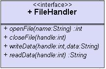
Creation: An interface is added by right clicking on a
class model diagram editor or on the class model icon
within the project tree and selecting the "Add Interface" option from the menu.
Position the interface outline where you wish it to be placed on the diagram and
left click, enter the name when prompted and click "OK".
Rules: An interface must have a unique name within its namespace (i.e.
the package in which it is defined, rather than the specific model on which it
exists). Attributes may not be added to an interface. All operations and signal
receptions contained by the interface have public visibility and are
specified as abstract (i.e. have no implementation method).
Operations: Move Forwards/Backwards, Bring to Front, Send to Back,
Delete, Add Operation, Add Signal Reception, Re-Order (features), Add
Generalization, Add Dependency, Is Leaf Interface, Is Root Interface, Set
Visibility (Private, Protected, Package, Public) and Edit Interface Color/Annotation/Name.
Datatype
Definition: A datatype is a kind of classifier used to define a set of
objects that have no identity, but simply represent values. Since datatypes are
just a special kind of classifier they can be involved
in generalization relationships, have
associations and be specified as being leaf or root
etc. Datatypes can only contain definitions of Operations
since attributes would provide identity. Datatypes are often used to model
special attribute/parameter types required in the system being modeled.
Representation: A datatype is represented by a rectangular shaped node
that is (by default) cyan in color. It is split into three compartments, the top
part holding the name of the datatype and the <<datatype>> stereotype, the
middle part is always empty (since attributes are not permitted), and the bottom
part holding the query operations defined within the datatype. e.g.
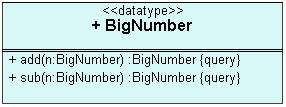
Creation: A datatype is added by right clicking on a
class model diagram editor or on the class model icon
within the project tree and selecting the "Add Data Type" option from the menu.
Position the datatype outline where you wish it to be placed on the diagram and
left click, enter the name when prompted and click "OK".
Rules: A datatype must have a unique name within its namespace (i.e.
the package in which it is defined, rather than the specific model on which it
exists). Attributes may not be added to a datatype. All operations contained by
a datatype must be specified as being a query, since no data values exist
within the datatype instance. Associations linked to datatypes may not be
navigable away from the datatype.
Operations: Move Forwards/Backwards, Bring to Front, Send to Back,
Delete, Add Operation, Re-Order Operations, Add Generalization, Add Dependency,
Is Abstract Type, Is Leaf Type, Is Root Type, Set Visibility (Private,
Protected, Package, Public) and Edit Type Color/Annotation/Name.
Primitive Type
Definition: A primitive type is a kind of datatype
used to identify predefined datatypes which have no structure defined within the
model itself. Since primitive types are just a special kind of
classifier they can be involved in
generalization relationships, have
associations and be specified as being leaf or root
etc. Primitive types do not contain features such as attributes and operations,
since they are seen as being predefined elements. Primitive types are often used
to model types that are defined outside the scope of the UML model, e.g. common
mathematical types.
Representation: A primitive type is represented by a rectangular
shaped node that is (by default) cyan in color. It is split into three
compartments, the top part holding the name of the datatype and the
<<primitive>> stereotype, the middle and bottom compartments are always empty
(since attributes and operations are not permitted). e.g.
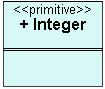
Creation: A primitive type is added by right clicking on a
class model diagram editor or on the class model icon
within the project tree and selecting the "Add Primitive Type" option from the
menu. Position the primitive type outline where you wish it to be placed on the
diagram and left click, enter the name when prompted and click "OK".
Rules: A primitive type must have a unique name within its namespace
(i.e. the package in which it is defined, rather than the specific model on
which it exists). Attributes, operations and receptions may not be added to a
primitive type. Associations linked to primitive types may not be navigable away
from the primitive type.
Operations: Move Forwards/Backwards, Bring to Front, Send to Back,
Delete, Add Generalization, Add Dependency, Is Abstract Type, Is Leaf Type, Is
Root Type, Set Visibility (Private, Protected, Package, Public) and Edit Type
Color/Annotation/Name.
Enumeration
Definition: An enumeration type is a kind of
datatype that has a well defined set of of possible values, known as
enumeration literals. Since enumeration types
are just a special kind of classifier they can be
involved in generalization relationships, have
associations and be specified as being leaf or root
etc. Enumeration types can only contain definitions of
Enumeration Literals and
Operations. Enumeration types are often used to model types with a finite
set of nominal values.
Representation: A enumeration type is represented by a rectangular
shaped node that is (by default) cyan in color. It is split into three
compartments, the top part holding the name of the enumeration type and the
<<enumeration>> stereotype, the middle part holding the enumeration literals,
and the bottom part holding the query operations defined within the enumeration.
e.g.
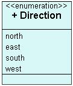
Creation: An enumeration type is added by right clicking on a
class model diagram editor or on the class model icon
within the project tree and selecting the "Add Enumeration Type" option from the
menu. Position the enumeration type outline where you wish it to be placed on
the diagram and left click, enter the name when prompted and click "OK".
Rules: An enumeration must have a unique name within its namespace
(i.e. the package in which it is defined, rather than the specific model on
which it exists). Attributes may not be added to an enumeration type. All
contained enumeration literal values must have unique names. All operations
contained by a datatype must be specified as being a query, since no data
values exist within the enumeration type instance. Associations linked to an
enumeration may not be navigable away from the enumeration type.
Operations: Move Forwards/Backwards, Bring to Front, Send to Back,
Delete, Add Enumeration Label, Add Operation, Re-Order (features), Add
Generalization, Add Dependency, Is Abstract Type, Is Leaf Type, Is Root Type,
Set Visibility (Private, Protected, Package, Public) and Edit Type Color/Annotation/Name.
Signal
Definition: A signal is a kind of classifier used to define objects
that are used for asynchronous communication between run-time instances. Since
signals are just a special kind of classifier they can
be involved in generalization relationships, have
associations and be specified as being leaf, root
etc. Signals may contain attributes and
operations. Signals may also contain an underlying
statechart model and/or
activity model to help model the behavioral nature
of the signal. The receptions defined within a
classifier identify which signals can be received and handled by that
classifier.
Representation: A signal is represented by a rectangular shaped node
that is (by default) orange in color. It is split into three compartments, the
top part holding the name of the signal and the <<signal>> stereotype, the
middle part holding the attributes contained by the signal and the bottom part
holding the operations defined within the signal. e.g.
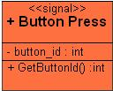
Creation: A signal is added by right clicking on a
class model diagram editor or on the class model icon
within the project tree and selecting the "Add Signal" option from the menu.
Position the signal outline where you wish it to be placed on the diagram and
left click, enter the name when prompted and click "OK".
Rules: A signal must have a unique name within its namespace (i.e. the
package in which it is defined, rather than the specific model on which it
exists).
Operations: Move Forwards/Backwards, Bring to Front, Send to Back,
Delete, Add Attribute, Add Operation, Re-Order (features), Add Association, Add
Generalization, Add Realization, Add Dependency, Realize Interface, Is Leaf
Signal, Is Root Signal, Set Visibility (Private, Protected, Package, Public) and
Edit Signal Color/Annotation/Name.
Exception
Definition: An exception is a kind of signal
who's instances are typically raised by operations to signify faults during
execution. Since exceptions are just a special kind of
classifier they can be involved in generalization
relationships, have associations and be specified as
being abstract, leaf or root etc. Exceptions may contain
attributes and operations. Exceptions may also
contain an underlying statechart model and/or
activity model to help model the behavioral nature
of the exception.
Representation: An exception is represented by a rectangular shaped
node that is (by default) light brown in color. It is split into three
compartments, the top part holding the name of the exception and the
<<exception>> stereotype, the middle part holding the attributes contained by
the exception and the bottom part holding the operations defined within the
exception. e.g.
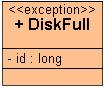
Creation: An exception is added by right clicking on a
class model diagram editor or on the class model icon
within the project tree and selecting the "Add Exception" option from the menu.
Position the exception outline where you wish it to be placed on the diagram and
left click, enter the name when prompted and click "OK".
Rules: An exception must have a unique name within its namespace (i.e.
the package in which it is defined, rather than the specific model on which it
exists).
Operations: Move Forwards/Backwards, Bring to Front, Send to Back,
Delete, Add Attribute, Add Operation, Re-Order (features), Add Association, Add
Generalization, Add Realization, Add Dependency, Realize Interface, Is Leaf
Exception, Is Root Exception, Set Visibility (Private, Protected, Package,
Public) and Edit Exception Color/Annotation/Name.
Actor
Definition: An actor is a kind of classifier used to define external
objects that interact with the system being modeled. Since actors are just a
special kind of classifier they can be involved in
generalization relationships and have
communication associations etc. Actors
may contain an underlying statechart model
and/or activity model to help model their
behavioral nature. Actors are typically attached to one or more
Use Case elements to show how they interact with the
system.
Representation: An actor is represented by a stick man shaped node
with its name label displayed above. i.e.
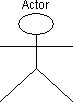
Creation: An actor is added by right clicking on a
Use Case model diagram editor or on the Use Case
model icon within the project tree and selecting the "Add Actor" option from the
menu. Position the actor outline where you wish it to be placed on the diagram
and left click, enter the name when prompted and click "OK".
Rules: An actor must have a unique name within its namespace (i.e. the
package in which it is defined, rather than the specific model on which it
exists).
Operations: Move Forwards/Backwards, Bring to Front, Send to Back,
Delete, Add Communication (association), Add Generalization, Set Visibility
(Private, Protected, Package, Public) and Edit Actor Color/Annotation/Name.
Use Case
Definition: A use case is a kind of classifier used to represent the
uses of the system as seen from external actors. Use case elements identify
the high level functionality of a system. Since use cases are just a special
kind of classifier they can be involved in generalization
relationships and have communication associations
etc. Use cases may contain an underlying statechart
model and/or activity model to help model
their behavioral nature. Use cases are typically attached to one or more Actor
elements to show how they are externally instigated. Use case elements can also
include the functionality of other use cases by using an <<include>>
dependency, or conditionally extend the functionality
of other use cases by using an <<extend>>
dependency.
A use case element may have an underlying storyboard
model defined. This allows for the definition of any graphical user interface
requirements that are applicable to the functionality of the use case.
Representation: A use case is represented by an oval shaped node that
is (by default) blue in color. It has a top compartment that holds the name of
the use case and an optional lower compartment that is used to show
extension points defined within the use case.
i.e.
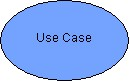
Creation: A use case is added by right clicking on a
Use Case model diagram editor or on the use case
model icon within the project tree and selecting the "Add UseCase" option from
the menu. Position the use case outline where you wish it to be placed on the
diagram and left click, enter the name when prompted and click "OK".
Rules: A use case must have a unique name within its namespace (i.e.
the package in which it is defined, rather than the specific model on which it
exists).
Operations: Move Forwards/Backwards, Bring to Front, Send to Back,
Delete, Add Extension Point, Re-Order Extension Points, Add Communication
(association), Add Generalization, Add <<include>> Dependency, Add <<extend>>
Dependency, Set Visibility (Private, Protected, Package, Public) and Edit
UseCase Color/Annotation/Name.
Package
Definition: A package is a kind of classifier used to help manage
models and their elements. Packages provide a method of dividing large models
into manageable chunks. Each package contains any number of subordinate UML
models. Since packages are just a special kind of
classifier they can be involved in generalization
relationships and be specified as being leaf or root etc. Packages can also
import or access the the functionality of other packages by using an <<import>>
or <<access> dependency respectively. The rules for
how models are divided into packages are very relaxed, e.g. a model could be
divided into packages based on a logical divide of functionality, or
alternatively based on an allocation of work to various team members. Packages
provide a specific namespace in which elements exist, i.e. they provide the
bounding area in which element names must be unique.
Representation: A package is represented by a folder shaped node that
is (by default) peach in color. It has a top compartment that holds the name of
the package and a lower compartment that displays a list UML models contained
within the package. e.g.
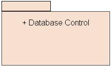
Creation: A package is added by right clicking on a UML model diagram
editor or on a model icon within the project tree and selecting the "Add
Package" option from the menu. Position the package outline where you wish it to
be placed on the diagram and left click, enter the name when prompted and click
"OK".
Rules: A package must have a unique name within its namespace (i.e.
the package in which it is defined, rather than the specific model on which it
exists).
Operations: Move Forwards/Backwards, Bring to Front, Send to Back,
Delete, Add <various> UML Models, Re-Order Models, Add Generalization, Add
Realization, Add <<import>> Dependency, Add <<access>> Dependency, Realize
Interface, Is Leaf Package, Is Root Package, Set Visibility (Private, Protected,
Package, Public) and Edit Package Color/Annotation/Name.
Node
Definition: A node descriptor is a kind of classifier used to
represent physical objects or computational resources/devices. Since nodes are
just a special kind of classifier they can be involved
in generalization relationships, have
communication associations and be
specified as being abstract, leaf or root etc. Nodes may contain
attributes, operations and
signal receptions. Nodes may also contain an
underlying statechart model and/or
activity model to help model their behavioral
nature. Nodes are often associated with other nodes to show some sort of
communication path between them. Also nodes often deploy
components, which is shown using a <<deploy>>
dependency relationship. Nodes instances may be
used to model run-time instances of nodes.
Representation: A node is represented by a three dimensional cube
shaped node that is (by default) lilac in color. It is split into three
compartments, the top part holding the name of the node and any stereotype, the
middle part holding the attributes contained by the node and the bottom part
holding the operations defined within the node. e.g.
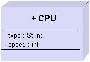
Creation: A node is added by right clicking on a
Deployment model diagram editor or on the
Deployment model icon within the project tree and selecting the "Add Node
Descriptor" option from the menu. Position the node outline where you wish it to
be placed on the diagram and left click, enter the name when prompted and click
"OK".
Rules: A node must have a unique name within its namespace (i.e. the
package in which it is defined, rather than the specific model on which it
exists). Nodes that are specified as being abstract can not
also be specified as being leaf (this is prevented by the user
interface).
Operations: Move Forwards/Backwards, Bring to Front, Send to Back,
Delete, Add Attribute, Add Operation, Add Signal Reception, Re-Order (features),
Attach to Deployed Component, Add Association, Add Generalization, Add
Realization, Add Dependency, Realize Interface, Is Abstract Node, Is Leaf Node,
Is Root Node, Set Visibility (Private, Protected, Package, Public) and Edit Node
Color/Annotation/Name.
Component
Definition: A component descriptor is a kind of classifier used to
encapsulate functionality of the system into a modular element that can be
easily replaced and/or deployed. Since components are just a special kind of
classifier they can be involved in
generalization relationships and be specified as
being abstract, leaf or root etc. Components may contain an underlying
statechart model and/or
activity model to help model their behavioral
nature. Components often expose their functionality using
interfaces and contain resident classes that provide
the functionality. Also components often have specific implementing
artifacts. Component
instances may be used to model run-time instances of components.
Representation: A component is represented by a rectangular shaped
node with two left hand boxes that is (by default) light pink in color. The name
of the component and any stereotype is shown within the component. e.g.
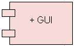
Creation: A component is added by right clicking on a
Component model/Deployment
model diagram editor or on the Component/Deployment model icon within the
project tree and selecting the "Add Component Descriptor" option from the menu.
Position the component outline where you wish it to be placed on the diagram and
left click, enter the name when prompted and click "OK".
Rules: A component must have a unique name within its namespace (i.e.
the package in which it is defined, rather than the specific model on which it
exists). Components that are specified as being abstract can
not also be specified as being leaf (this is prevented by the
user interface).
Operations: Move Forwards/Backwards, Bring to Front, Send to Back,
Delete, Attach to Resident Class/Component, Attach To Implementing Artifact, Add
Generalization, Add Realization, Add Dependency, Realize Interface, Is Abstract
Component, Is Leaf Component, Is Root Component, Set Visibility (Private,
Protected, Package, Public) and Edit Component Color/Annotation/Name.
Artifact
Definition: An artifact is a kind of classifier used to represent a
piece of information that is produced or used by the system being modeled.
Artifacts typically represent files such as executable programs, source code or
documents. Artifacts are often attached to one or more
component elements that they implement. They can also be directly attached
to classes via dependency
relationships.
Representation: An artifact is represented by a rectangular shaped
node that is (by default) light green in color. The name of the artifact and any
stereotype is shown within the artifact node. e.g.
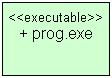
Creation: An artifact is added by right clicking on a
Component model/Deployment
model diagram editor or on the Component/Deployment model icon within the
project tree and selecting the "Add Artifact" option from the menu. Position the
artifact outline where you wish it to be placed on the diagram and left click,
enter the name when prompted and click "OK".
Rules: An artifact must have a unique name within its namespace (i.e.
the package in which it is defined, rather than the specific model on which it
exists).
Operations: Move Forwards/Backwards, Bring to Front, Send to Back,
Delete, Add Dependency, Set Visibility (Private, Protected, Package, Public) and
Edit Artifact Color/Annotation/Name.
Collaboration
Definition: A collaboration is a kind of classifier used to represent
the realization of either an operation or classifier.
Collaborations can also be used to show how a number of classifiers play specific
roles in order to help implement a part of the system's behavior. Since collaborations
are just a special kind of classifier they can be
involved in generalization relationships etc.
Collaborations typically contain one or more underlying sequence
models and/or collaboration models to
help model the interaction between classifiers. Collaborations identify the
collaborating classifiers and their roles using
classifier role relationships.
Representation: A collaboration is represented by an oval shaped node
that is (by default) green in color. It has a top compartment that holds the
name of the collaboration and an optional lower compartment that is used to show
the underlying sequence/collaboration models.
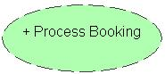
Creation: A collaboration is added by right clicking on a
Use Case model/Class model
diagram editor or on the Use Case/Class model icon within the project tree and
selecting the "Add Collaboration" option from the menu. Position the
collaboration outline where you wish it to be placed on the diagram and left
click, enter the name when prompted and click "OK".
Rules: A collaboration must have a unique name within its namespace
(i.e. the package in which it is defined, rather than the specific model on
which it exists).
Operations: Move Forwards/Backwards, Bring to Front, Send to Back,
Delete, Add Underlying Sequence Model, Add Underlying Collaboration Model,
Re-Order Models, Add Generalization, Add Realization, Add Classifier Role, Add
Used Collaboration, Set Visibility (Private, Protected, Package, Public) and
Edit Collaboration Color/Annotation/Name.
State
Definition: A state is an element used to represent a situation where
a set of circumstances are known to be true. A simple state is the most commonly
used state and identifies one of the available states within a system. These
type of states are used on Statechart models
rather than Activity models. States are connected
to other states using transitions. Composite states
contain sub-states, allowing grouping of states within super-states. Concurrent
composite states contain regions that define several sub-state machines that
exist in parallel. A state may contain actions that get executed on entry to the
state, on exit from the state and continuously while in the state. These are
known as entry, exit and do
actions respectively. States may also contain
internal transitions, which are transitions that when triggered do not cause
a change of state to take place.
Representation: A simple state is represented by a rounded rectangular
shaped node that is (by default) orange in color. The name of the state and any
stereotype is shown within the top compartment. Any Entry/Exit/Do actions and
internal transitions are shown as textual labels below the top compartment.
Composite states are similar to simple states except that they also contain a
sub-statechart model within the body of the state. Concurrent composite states
are similar to composite states except there are two or more regions (identified
by dividing dashed lines) which each contain a sub-statechart mode, examples -
|
|
|
|
|
A Simple State
|
A Composite State
|
A Concurrent Composite State
|
Creation: A state is added by right clicking on a
Statechart model diagram editor or on the
Statechart model icon within the project tree and selecting the "Add State"
option from the menu. Position the state outline where you wish it to be placed
on the diagram and left click, enter the name when prompted and click "OK". If
the state outline is placed within another state or state region then the state
is created as a sub-state of the parent.
Rules: A state must have a unique name within its model. A state
should usually have at least one incoming and one outgoing transition (either
directly or via its super-state).
Operations: Move Forwards/Backwards, Bring to Front, Send to Back,
Delete, Add Outgoing Transition, Add Internal Transition, Re-Order Transitions,
Add New Region, Remove Region, (set) Stereotype, Edit Entry/Exit/Do Actions, and
Edit State Color/Annotation/Name.
Action State
Definition: An action state is a kind of state used to model
activities carried out on Activity models. An
action state has a name and an expression that is executed when the state is
entered. Action states are usually exited automatically via an outgoing
transition once the expression execution is complete,
i.e. transition to the next action state is implicitly performed rather than on
the arrival of a specific event. Action states may have an underlying
activity model, in which case the definition of
the activity is further described by a more detailed set of sub-activities and
transitions.
Representation: An action state is represented by a rectangular shaped
node that is (by default) orange in color. The name of the state is shown within
the top part of the state and the expression is shown below. e.g.
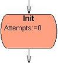
Creation: An action state is added by right clicking on a
Activity model
diagram editor or on the Activity model icon within the project tree and
selecting the "Add Action" option from the menu. Position the state outline
where you wish it to be placed on the diagram and left click, enter the name and
expression when prompted and click "OK".
Rules: An action state should usually have at least one incoming and
one outgoing transition.
Operations: Move Forwards/Backwards, Bring to Front, Send to Back,
Delete, Add Outgoing Transition, Create Nested Activity Model, View/Delete
Nested Model and Edit Action Color/Annotation/Details.
Initial State
Definition: An initial state is a kind of state used to identify the
first transition to be taken within a model. The destination of the first
transition is thus the first state to be entered within the model (i.e. the
default state). Only a single outgoing transition may be connected to an initial
state.
Representation: An initial state is represented by a solid circular
shaped node that is (by default) black in color. i.e.
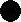
Creation: An initial state is added by right clicking on a
Statechart model/Activity
model diagram editor or on the model icon within the project tree and
selecting the "Add Initial State" option from the menu. Position the state
outline where you wish it to be placed on the diagram and left click.
Rules: Only one initial state may exist within a model (or within a
composite state/each concurrent region). An initial state may not have any
incoming transitions and only one outgoing transition. The transition attached
to an initial state may not have a trigger event.
Operations: Move Forwards/Backwards, Bring to Front, Send to Back,
Delete, Add Outgoing Transition, Edit State Color/Annotation.
Final State
Definition: A final state is a kind of state used to identify the
completion of a state machine. If the final state is within a composite state
then the state signifies the completion of the composite state only, rather than
the entire state machine. A final state has incoming transitions only.
Representation: A final state is represented by a solid circular
shaped node with a larger outer circle that is (by default) black in color. i.e.

Creation: A final state is added by right clicking on a
Statechart model/Activity
model diagram editor or on the model icon within the project tree and
selecting the "Add Final State" option from the menu. Position the state outline
where you wish it to be placed on the diagram and left click.
Rules: A final state may not have any outgoing transitions.
Operations: Move Forwards/Backwards, Bring to Front, Send to Back,
Delete, Edit State Color/Annotation.
History State
Definition: A history state is a kind of state used to represent the
most recent active state within a state machine (or composite state). There are
two flavors of history states, a shallow history state and a deep history state.
A shallow history state only allows the most recently active state within the
same composite level as the history state to be re-entered. Whereas a deep
history state allows the most recently active state at any level within a
composite state's hierarchy to be re-entered. The outgoing transition from a
history state is taken if the history state is being entered for the first time
(i.e. there is no most recently active state), thus allowing a default initial
state to be identified.
Representation: A history state is represented by a circular shaped
node containing a 'H' (for shallow history) and a 'H*' (for deep history). i.e.
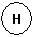
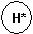
Creation: A history state is added by right clicking on a
Statechart model/Activity
model diagram editor or on the model icon within the project tree and
selecting the "Add (Deep) History State" option from the menu. Position the
state outline where you wish it to be placed on the diagram and left click.
Rules: Only one history state of each type (shallow and deep) may
exist within a model (or within a composite state/each concurrent region). A
history state may have only one outgoing transition. The transition attached to
a history state may not have a trigger event.
Operations: Move Forwards/Backwards, Bring to Front, Send to Back,
Delete, Add Outgoing Transition, Edit State Color/Annotation.
Synchronization State
Definition: A synchronization state is a kind of state used to allow
coordination of states within concurrent regions. A synchronization state is
used in collaboration with fork and
join states to specify that the entry to a state in
one concurrent region is dependent on the exit from a state within another
concurrent region. i.e. it allows states within different regions to be
synchronized. An integer value may be specified that limits the number of times
an outgoing transition is fired for each incoming transition. By default this
value is unbounded which means that for each incoming transition exactly one
outgoing transition is fired. If this value is set, it should be a positive
integer greater than zero. A value of one would cause only one outgoing
transition to be fired even if several incoming transitions were received.
Representation: A synchronization state is represented by a circular
shaped node containing a '*' (for unbounded) and a 'n' (for bounded). i.e.
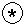
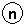
Creation: A synchronization state is added by right clicking on a
Statechart model/Activity
model diagram editor or on the model icon within the project tree and
selecting the "Add Synch-State" option from the menu. Position the state outline
where you wish it to be placed on the diagram and left click.
Rules: All incoming transitions to a synchronization state must
originate from the same region. All outgoing transitions from a synchronization
state must target states within the same region.
Operations: Move Forwards/Backwards, Bring to Front, Send to Back,
Delete, Add Outgoing Transition, Edit State Color/Annotation/Bound Value.
Choice State
Definition: A choice state is a kind of state used to model the
splitting of incoming transitions into multiple outgoing transitions, i.e. a
branch. Each outgoing transition should have a guard condition that is evaluated
at run-time to decide which outgoing transition should be taken. Choice states
appear on statechart models only.
Representation: A choice state is represented by a small circular
shaped node, i.e.
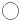
Creation: A choice state is added by right clicking on a
Statechart model diagram editor or on the model
icon within the project tree and selecting the "Add Choice-State" option from
the menu. Position the state outline where you wish it to be placed on the
diagram and left click.
Rules: All outgoing transitions from a choice state must not have a
trigger event specified.
Operations: Move Forwards/Backwards, Bring to Front, Send to Back,
Delete, Add Outgoing Transition, Edit State Color/Annotation.
Junction State
Definition: A junction state is a kind of state used to model either
merging or static conditional branching of transitions. In the former case
several incoming transitions are combined into a single outgoing transition. In
the latter case each outgoing transition should have a guard condition that is
evaluated to decide which outgoing transition should be taken. Junction states
appear on statechart models only.
Representation: A junction state is represented by a small solid
circular shaped node, i.e.
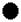
Creation: A junction state is added by right clicking on a
Statechart model diagram editor or on the model
icon within the project tree and selecting the "Add Junction-State" option from
the menu. Position the state outline where you wish it to be placed on the
diagram and left click.
Rules: All outgoing transitions from a junction state must not have a
trigger event specified.
Operations: Move Forwards/Backwards, Bring to Front, Send to Back,
Delete, Add Outgoing Transition, Edit State Color/Annotation.
Decision State
Definition: A decision state is a kind of state used to
model conditional branching of transitions on
activity models. Each outgoing transition should have a guard condition
that is evaluated to decide which outgoing transition should be taken.
Decision states are a short-cut notation which is used rather than having
several outgoing transitions from a state triggered by the same event, but
with different guards.
Representation: A decision state is represented by a
small solid diamond shaped node, i.e.
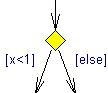
Creation: A decision state is added by right clicking
on an Activity model diagram editor or on the
model icon within the project tree and selecting the "Add Decision" option
from the menu. Position the decision outline where you wish it to be placed on
the diagram and left click.
Rules: A decision state may have only one incoming
transition. All outgoing transitions from a decision state must not have a
trigger event specified but should have a guard condition. There should be two
or more outgoing transitions from a decision state.
Operations: Move Forwards/Backwards, Bring to Front,
Send to Back, Delete, Add Outgoing Transition, Edit State Color/Annotation.
Merge State
Definition: A merge state is a kind of state used to
model the merging of transitions on activity models.
Merge states are a short-cut notation which is used rather than having several
transitions targeting the same state. i.e. two or more incoming transitions
are combined into a single outgoing transition.
Representation: A merge state is represented by a small
solid diamond shaped node, i.e.
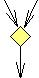
Creation: A merge state is added by right clicking on
an Activity model diagram editor or on the model
icon within the project tree and selecting the "Add Merge" option from the
menu. Position the merge outline where you wish it to be placed on the diagram
and left click.
Rules: A merge state may have only one outgoing
transition which must not have a trigger event or guard condition specified.
There should be two or more incoming transitions to a merge state.
Operations: Move Forwards/Backwards, Bring to Front,
Send to Back, Delete, Add Outgoing Transition, Edit State Color/Annotation.
Fork State
Definition: A fork state is a kind of state used to model the
splitting of a single incoming transition into multiple outgoing concurrent
transitions. A fork state allows the modeling of concurrent transition paths
within a single model. Fork states can be used on both
statechart models and
activity models. In the former case the outgoing transitions must target
different concurrent regions.
Representation: A fork state is represented by a solid bar shaped node
(note: in activity models the bar is shown horizontally), i.e.
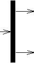
Creation: A fork state is added by right clicking on a
Statechart model/Activity
model diagram editor or on the model icon within the project tree and
selecting the "Add Fork-State" option from the menu. Position the state outline
where you wish it to be placed on the diagram and left click.
Rules: A fork state may have only one incoming transition. All
outgoing transitions from a fork state must not have a trigger event or guard
condition specified.
Operations: Move Forwards/Backwards, Bring to Front, Send to Back,
Delete, Add Outgoing Transition, Edit State Color/Annotation.
Join State
Definition: A join state is a kind of state used to model the merging
of a multiple concurrent incoming transitions into a single outgoing transition.
A join state allows the modeling of concurrent transition paths within a single
model. Join states can be used on both statechart
models and activity models. In the former case
the incoming transitions must originate from different concurrent regions.
Representation: A join state is represented by a solid bar shaped node
(note: in activity models the bar is shown horizontally), i.e.
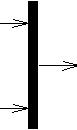
Creation: A join state is added by right clicking on a
Statechart model/Activity
model diagram editor or on the model icon within the project tree and
selecting the "Add Join-State" option from the menu. Position the state outline
where you wish it to be placed on the diagram and left click.
Rules: A join state may have only one outgoing transition which must
not have a trigger event specified. All incoming transitions to a join state
must not have a guard condition specified.
Operations: Move Forwards/Backwards, Bring to Front, Send to Back,
Delete, Add Outgoing Transition, Edit State Color/Annotation.
Object
Definition: An object is a kind of instance
that is used to model run-time instantiations of classes.
Each object has its own name and a class type (which the object represents). A
number of attribute values can be contained by
the object that show what values are assigned to attributes during a specific
point in time. Objects are often related to other objects using
link relationships (which are run-time instances of
associations). Objects may appear on most UML models and have subtle
behavioral differences depending on which model they appear. e.g. Within
sequence models special active objects
can be added that represent instances that are already active within the system.
Representation: An object is represented by a rectangular shaped node
that is (by default) very light yellow in color. The name/type of the object is
shown underlined within the top compartment and any attribute/value pairs are
shown within the lower compartment. An object shows the name and a type in the
form <name> : <type>. e.g.
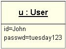
Creation: An object is added by right clicking on a model diagram
editor or on the model icon within the project tree and selecting the "Add
Object" option from the menu. Position the object outline where you wish it to
be placed on the diagram and left click, enter the name and select the type when
prompted then click "OK".
Rules: An object has very few rules compared to other model elements,
ideally an object should be based on a class (although this is not enforced).
When based on a class the attribute values shown should only include values for
attributes that exists within the class type.
Operations: Move Forwards/Backwards, Bring to Front, Send to Back,
Delete, Add Attribute Value, Re-Order Attribute Values, Add Link, Add <<become>>
Dependency, Add <<copy>> Dependency, Show Where Instance Defined and Edit Object
Color/Annotation/Details.
Node Instance
Definition: A node instance is a kind of instance
that is used to model instantiations of node descriptors.
Each node instance has its own name and a node type (which the instance
represents). A number of attribute values can be
contained by the instance that show what values are assigned to attributes
during a specific point in time. Instances are often related to other instances
using link relationships (which are run-time instances of
communication associations). Node
instances appear on deployment models.
Representation: A node instance is represented by a three dimensional
cube shaped node that is (by default) very light lilac in color. The name/type
of the instance is shown underlined within the top compartment and any
attribute/value pairs are shown within the lower compartment. An instance shows
the name and a type in the form <name> : <type>. e.g.
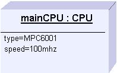
Creation: A node instance is added by right clicking on a
Deployment model diagram editor or on the
deployment model icon within the project tree and selecting the "Add Node
Instance" option from the menu. Position the instance outline where you wish it
to be placed on the diagram and left click, enter the name and select the type
when prompted then click "OK".
Rules: A node instance has very few rules compared to other model
elements, ideally an instance should be based on a node descriptor (although
this is not enforced). When based on a node the attribute values shown should
only include values for attributes that exists within the node type.
Operations: Move Forwards/Backwards, Bring to Front, Send to Back,
Delete, Add Attribute Value, Re-Order Attribute Values, Attach to Resident
Instance, Add Link, Add <<become>> Dependency, Add <<copy>> Dependency, Show
Where Instance Defined and Edit Instance Color/Annotation/Details.
Component Instance
Definition: A component instance is a kind of
instance that is used to model run-time instantiations of
components. Each component instance has its own name
and a component type (which the instance represents). Component instances are
often related to other instances (usually objects) using
<<reside>> dependency relationships, indicating that
the target instance resides on the component instance during run-time. Component
instances appear on deployment models.
Representation: A component instance is represented by a rectangular
shaped node with two left hand boxes that is (by default) very light pink in
color. The name/type of the instance is shown underlined within the instance
shape. An instance shows the name and a type in the form <name> : <type>.
e.g.
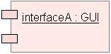
Creation: A component instance is added by right clicking on a
Deployment model diagram editor or on the
deployment model icon within the project tree and selecting the "Add Component
Instance" option from the menu. Position the instance outline where you wish it
to be placed on the diagram and left click, enter the name and select the type
when prompted then click "OK".
Rules: A component instance has very few rules compared to other model
elements, ideally an instance should be based on a component descriptor
(although this is not enforced).
Operations: Move Forwards/Backwards, Bring to Front, Send to Back,
Delete, Attach to Resident Instance, Add <<become>> Dependency, Add <<copy>>
Dependency, Show Where Instance Defined and Edit Instance Color/Annotation/Details.
Attribute
Definition: An attribute is a feature declared
within a classifier that defines what data values are
to be maintained by run-time instances of the classifier. Attributes have a
name, type and multiplicity information. An attribute has a visibility (e.g.
private) that determines how visible it is outside its containing classifier. An
attribute also has a scope which specifies whether the value is associated with
each instance of the classifier, or with the classifier itself. Attributes may
also have an initial value. The multiplicity information is used to specify the
lower and upper bound of value instances of the attribute, for example an
attribute can be declared that allows exactly ten unique strings to be stored.
Representation: An attribute is represented by text and is typically
displayed within the middle compartment of a classifier. A classifier scoped
attribute is underlined. The attribute text is split into various parts in the
form <name> : <type> [<multiplicity>] [=<initial_value>] [{<constraint_tags>}].
Multiplicity is specified as <lower_bound>..<upper_bound> with
an asterisk (*) used to represent an unbounded upper bound. e.g.
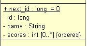
Creation: An attribute is created by right clicking on the classifier
in which the attribute is to be defined. Select the "Add Attribute" from the
menu then input details as prompted.
Rules: Attributes should always have a unique name within their
classifier hierarchy (i.e. the name must be not only unique within the
classifier itself but within any classifiers that are involved in
generalizations with the classifier).
Operations: Move Forwards/Backwards, Bring to Front, Send to Back,
Delete, Is Changeable, Is Frozen, Is Add Only, Is Classifier Scoped, Is Derived,
Set Visibility (Private, Protected, Package, Public), Show Where Type Defined
and Edit Attribute Color/Annotation/Details.
Operation
Definition: An operation is a feature that
defines a service which may be requested in order to carry out some behavior
within the run-time system. Each operation has a signature that specifies what
parameters are required when the operation is called. Operations are defined
within an owning classifier that provides a context in
which the operation's behavior in carried out. Operations often make use of
attributes within the owning classifier to carry out
their behavior (although this is not always the case). An operation has a
visibility (e.g. public) that determines how visible it is outside its
containing classifier. An operation also has a scope which specifies whether it
is invoked within the context of a specific instance of the classifier, or
within the context of the classifier itself. Several other predefined
constraints can be applied to operations limiting their ability to be executed
concurrently or their ability to effect the state of values within their
classifier, etc.
Representation: An operation is represented by text and is typically
displayed within the bottom compartment of a classifier. A classifier scoped
operation is underlined and an abstract operation is shown in italics. The
operation text is split into various parts in the form <name>(<param_list>)
[: <return_type>] [{<constraint_tags>}]. Each parameter specified has a
name, type, multiplicity and direction. e.g.
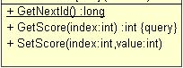
Creation: An operation is created by right clicking on the classifier
in which the operation is to be defined. Select the "Add Operation" from the
menu then input details as prompted.
Rules: Operations should always have a unique name within their classifier
hierarchy (i.e. the name must be not only unique within the classifier itself
but within any classifiers that are involved in generalizations with the classifier).
An operation may have a maximum of one return parameter.
Operations: Move Forwards/Backwards, Bring to Front, Send to Back, Delete,
Add Parameter, Add Return Parameter, Edit Parameter Details/Annotation, Delete
Parameter, Add Dependency, Is Sequential, Is Guarded, Is Concurrent, Is Abstract
Operation, Is Leaf Operation, Is Root Operation, Is Query Operation, Is Classifier
Scoped, Set Visibility (Private, Protected, Package, Public) and Edit Operation
Color/Implementation Method/Annotation/Name.
Signal Reception
Definition: A signal reception is a feature
that defines the ability of a classifier to handle a
specified signal during run-time execution. Each reception
is associated with a signal. The way in which a signal is handled by the
classifier is usually described within an underlying
statechart model contained by the classifier receiving the signal. A
reception has a visibility (e.g. public) that determines how visible it is
outside its containing classifier. A reception also has a scope that specifies
whether it is invoked within the context of a specific instance of the
classifier, or within the context of the classifier itself.
Representation: A reception is represented by text and is displayed
within the bottom compartment of a classifier. A classifier scoped reception is
underlined and an abstract reception is shown in italics. The reception name is
always prefixed by the <<signal>> stereotype, e.g.
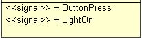
Creation: A reception is created by right clicking on the classifier
in which the reception is to be defined. Select the "Add Signal Reception" from
the menu then select the signal that is to be received
from the list provided.
Rules: Receptions should always have a unique name within their
classifier hierarchy (i.e. the name must be not only unique within the
classifier itself but within any classifiers that are involved in
generalizations with the classifier).
Operations: Move Forwards/Backwards, Bring to Front, Send to Back,
Delete, Is Abstract, Is Leaf, Is Root, Is Query, Is Classifier Scoped, Set
Visibility (Private, Protected, Package, Public) and Edit Reception Color/Annotation/Signal.
Enumeration Literal
Definition: An enumeration literal defines one possible nominal value
that may be assigned to a value who's type is based on the owning
enumeration type. Several literals are usually
specified within an enumeration type to define the set of possible values. An
enumeration literal is simply a textual name that is unique within its owning
enumeration type.
Representation: An enumeration literal is represented by a textual
name and is typically displayed within the middle compartment of an enumeration
type. e.g.
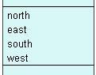
Creation: An enumeration literal is created by right clicking on the
Enumeration Type in which the literal is to be
defined. Select the "Add Enumeration Label" from the menu then input the name
when prompted.
Rules: Enumeration literals should always have a unique name within
their classifier hierarchy (i.e. the name must be not only unique within the
enumeration type itself but within any enumeration types that are involved in
generalizations with the enumeration type).
Operations: Move Forwards/Backwards, Bring to Front, Send to Back,
Delete and Edit Enumeration Color/Label.
Extension Point
Definition: An extension point identifies a location within a
use case classifier where the use case may be extended.
An extension point consists of a name and a location reference.
Representation: An extension point is represented by a textual name
and is typically displayed within the lower half of a use case classifier. e.g.
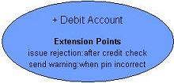
Creation: An extension point is created by right clicking on the
Use Case classifier in which the extension point is to be
defined. Select the "Add Extension Point" from the menu then input the name and
location when prompted.
Rules: Extension points must have a name.
Operations: Move Forwards/Backwards, Bring to Front, Send to Back,
Delete and Edit Extension Point Color/Annotation/Details.
Attribute Value
Definition: An attribute value defines what values are assigned to
attributes during execution at a specific point in
time. Attribute values are contained by instances
(specifically objects and node
instances). Attribute values help the modeling of run-time snapshots of the
system. Attribute values may be based on attributes
that are defined within the classifier of the containing instance. An attribute
value has a name and an associated value.
Representation: An attribute value is represented by a textual name
and value pair and is typically displayed within the bottom compartment of an
instance. e.g.
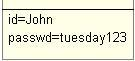
Creation: An attribute value is created by right clicking on the
instance in which the attribute value is to be defined. Select the "Add
Attribute Value " from the menu then input the details as prompted.
Rules: Attributes values should always have a unique name within their
containing instance. The value specified should be compatible with the type of
the attribute on which the attribute value is based.
Operations: Move Forwards/Backwards, Bring to Front, Send to Back,
Delete, Show Where Attribute Defined and Edit Attribute Value Color/Annotation/Details.
Association
Definition: An association models a
relationship between classifiers. The presence of
an association indicates that run-time instances of the classifiers may be
linked, subject to restrictions identified within each association end. An
association may also be represented by an association class,
in which case attributes and operations may also be defined within the
association. Each association end has a role name and a multiplicity
specification. Each end also has a number of standard constraints which may be
selected.
Representation: Associations are represented as solid lines between
two classifiers, such as classes, interfaces, nodes etc. They have three labels
attached to them, an association name label, a source end label and a
destination end label, i.e.
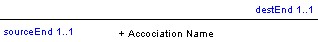
The association ends can be manipulated to specify information such as role
name, multiplicity, aggregation semantics and navigability. Multiplicity
information is show using the lower and upper bound values, e.g. 1..*
with an asterisk being used to represent an unbounded upper bound (synonymous to
"many"). Simple aggregation is shown using an open diamond attached to the end
of the association. Composite aggregation is shown using a solid diamond
attached to the end. If an association is only navigable in one direction, then
an arrow head will be shown at the end to which it is navigable. Various
standard constraints may also be specified on association ends making them
unique, ordered, frozen, addOnly etc. These are shown
after the end name between braces, e.g. { frozen, ordered }
Creation: To create an association you must right click on the
classifier you wish to be the source and select "Add Association" from the menu.
Now left click on the classifier you wish to be the destination, the association
will then be created with default source/end role names and multiplicity
information.
Rules: Associations can usually only connect classifiers of the same
type, e.g. Nodes can only be connected to Nodes. Class model classifiers however
can generally be connected to each other. e.g. it is possible to create an association
between a Class and an Interface. An error message is shown if an attempt to
break connection rules is made. Aggregation can only be assigned to one of the
association ends. An attempt to assign aggregation semantics to both ends results
in the previous aggregation semantics being removed. When given, the association
name should be unique within its containing namespace and the end names should
be different to each other (although this is not enforced). In addition to this
a model check produces a warning if the association end names are the same as
any attributes defined within the classifiers connected to the association.
Operations: Move Forwards/Backwards, Bring to Front, Send to Back,
Delete, Add/Remove Link Point, Source/Dest End Details, Make Association Class,
Stereotype, Is Derived Association, Set Visibility (Private, Protected, Package,
Public) and Edit Association Color/Annotation/Name.
Communication Associations
Definition: Communication associations are special kinds of associations
typically used to represent communication paths between actors
and use cases on use case models,
and between node descriptors on deployment
models. The only difference being they are referred to as communication
associations. Also the diagrams on which they appear typically hide the association
end labels by default (note: this behavior can be overridden).
Representation: A communication is represented by a single line
(unless name/end labels are not withheld in which case they appear as
associations), i.e.
Creation: To create a communication you must right click on the
classifier you wish to be the source and select "Add Communication
(association)" from the menu. Now left click on the classifier you wish to be
the destination, the communication association will then be created with default
source/end role names and multiplicity information (although this will usually
be hidden).
Rules: A communication may only link between a use case and actor on a
use case model, or between nodes on a deployment model.
Operations: Move Forwards/Backwards, Bring to Front, Send to Back,
Delete, Add/Remove Link Point, Source/Dest End Details, Stereotype, Set
Visibility (Private, Protected, Package, Public) and Edit Communication Color/Annotation/Name.
Generalization
Definition: A generalization models an inheritance type
relationship between
classifiers. A generalization reflects the fact that the features and
associations defined for a supertype classifier are inherited by a subtype
classifier. A subtype may inherit from one or more supertypes.
Representation: Generalizations are represented as solid lines between
two classifiers, with a large open arrow head at the supertype end, i.e.
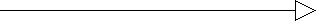
Creation: To create a generalization you must right click on the
classifier you wish to be the subtype and select "Add Generalization" from the
menu. Now left click on the classifier you wish to be the supertype, the
generalization relationship will then be created.
Rules: Generalizations may only exist between classifiers of the same
kind, e.g. classes can only have generalization relationships to other classes.
Generalizations may not form a recursive dependency between classifiers.
Supertypes may not be specified as being leaf classifiers.
Subtypes may not be specified as being root classifiers.
Operations: Move Forwards/Backwards, Bring to Front, Send to Back,
Delete, Add/Remove Link Point and Edit Generalization Color/Annotation.
Realization
Definition: A realization models a
relationship between classifiers where the source
classifier guarantees to implement the behavior specified by the destination
classifier. A realization is commonly used to show that a classifier provides
the implementation methods for abstract operations defined in an
interface. A classifier may realize one or more
interfaces. A realization is also sometimes shown between
collaborations and the classifier/operation that
the collaboration describes.
Representation: Realizations are represented as dashed lines between
two classifiers, with a large open arrow head at the destination end, i.e.
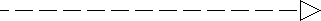
Creation: To create a realization you must right click on the
classifier you wish to be the source (realizing classifier) and select "Add
Realization" from the menu. Now left click on the classifier you wish to be the
destination (realized classifier), the realization relationship will then be
created.
Rules: The destination of a realization relationship must be a
classifier or operation.
Operations: Move Forwards/Backwards, Bring to Front, Send to Back,
Delete, Add/Remove Link Point and Edit Realization Color/Annotation.
Dependency
Definition: A dependency models a
relationship between modeling elements to indicate that one element makes
use of another element and that changes to the destination element may effect
the source element in some way. A dependency is unidirectional. There are many
stereotypes that can be applied to dependencies, the most common of which are
catered for directly within the menu options of the tool.
Representation: Dependencies are represented as dashed lines between
two elements, with a small arrow head at the destination end, i.e.
Creation: To create a dependency you must right click on the
classifier you wish to be the source and select "Add Dependency " from the menu.
Now left click on the element you wish to be the destination and the dependency
will be created.
Rules: There are no rules applied to dependencies.
Operations: Move Forwards/Backwards, Bring to Front, Send to Back,
Delete, Add/Remove Link Point, Make <<stereotype_name...>>, Set Link Color, Edit
Dependency Annotation.
Variations: A number of variations are provided as standard
within appropriate menu options, these are -
| Stereotype |
Where used |
Meaning |
| <<include>> |
Between Use Case classifiers |
Shows that a use case includes the behavior of another use case. |
| <<extend>> |
Between Use Case classifiers
|
Shows that a use case's behavior is conditionally extended by another
use case. |
| <<import>> |
Between Packages |
Shows that a package imports the elements defined in another package
into its namespace. |
| <<access>> |
Between Packages |
Shows that a package accesses the elements defined in another package. |
| <<reside>> |
Components/Nodes descriptors and Instances |
Shows that a component has resident components/classes. Or that a node
or component instance has resident component/class instances. |
| <<deploy>> |
Nodes and Component descriptors |
Shows that a node deploys a component. |
| <<implement>> |
Components and Artifacts |
Shows that a component or class is implemented by an artifact. |
| <<become>> |
Instances |
Shows that the same object takes on different identity or is resident on
different nodes/components at different periods in time. |
| <<copy>> |
Instances |
Shows that one instance is a copy of another instance. |
| <<send>> |
Operations and Signals |
Shows that an operation is capable of sending a specific
signal/exception. |
Back To Top
Classifier Role
Definition: A classifier role models a
relationship between collaboration elements and
classifiers that play a role during behavior defined
within the collaboration. A classifier role relationship helps define a context
in which a collaboration exists, i.e. which classifiers work together in order
to provide a specific piece of system behavior. Each classifier role has a role
name that defines the specific role being played by the classifier when involved
in the related collaboration.
Representation: Classifier roles are represented as dashed lines
between a collaboration and a classifier, e.g.
Creation: To create a classifier role you must right click on the
collaboration you wish to be the source and select
"Add Classifier Role" from the menu. Now left click on the classifier you wish
to be the role playing classifier, the classifier role relationship will then be
created and a prompt for the role name shown.
Rules: Classifier roles may only exist between collaboration and
classifier elements.
Operations: Move Forwards/Backwards, Bring to Front, Send to Back,
Delete, Add/Remove Link Point, Change Link/Text Color and Edit Role
Annotation/Name.
Transition
Definition: A transition relationship is used to model the movement
from one state to another within in either a
statechart model or an
activity model. A transition is triggered by an incoming event. There are
various types of incoming events such as a call (of an operation), the receipt
of a signal, the passing of time, or a change of circumstance (evaluated by an
expression). On receipt of a suitable event the transition is taken on condition
that an optional guard condition evaluates to true. Actions may also be attached
to transitions that are carried out once the transition is taken. The triggering
of a transition usually forces the current state to be changed, but this is not
always the case for transitions that start and end at the same state. There are
special internal transitions
which may be used to show transitions that do not result in a state change when
triggered. These are exactly the same as transitions but shown as internal text
items within a state rather than using a relationship, since the source and
target state are always the same.
Representation: Transitions are represented as solid
lines shown between states, with an open headed arrow shown on the target state.
A textual label shows the event, guard conditions and actions associated with
the transition in the form <event> [<condition>] / <action>,
e.g.
Creation: To create a transition you must right click on the
state you wish to be the source and select "Add Transition"
from the menu. Now left click on the state you wish to be the target of the
transition, the transition relationship will then be created and a prompt for
the event, guard and action within be shown.
Rules: Transitions may only exist between states, but there are
specific connectivity rules that are dependent on the kind of states being
linked.
Operations: Move Forwards/Backwards, Bring to Front, Send to Back,
Delete, Add/Remove Link Point, Add Event Parameter, Edit Event Parameter/Event
Annotation, Delete Event Parameter, Show Where Trigger Defined, Change Link/Text
Color and Edit Transition Annotation/Details.
Call
Definition: A call relationship is used to model interaction between
objects within either a sequence
model or a collaboration model. A call
shows the sending of a message from one object to another object. Each call has
a name and a list of argument values (actual parameters). A call typically
invokes an operation available within the target
object, or sends a signal capable or being received by the
target object. A call may originate and target the same object (i.e. an object
can make a call to itself). Within sequence models
calls are shown between object active lifelines, whereas within
collaboration models calls are shown along
links between objects.
Representation: Calls are represented as solid lines
shown between either lifelines or on links, with an arrow shown on the target
side. A textual label shows the call sequence number, guard/iteration condition
and name associated with the call in the form <seq_num> [<condition>]
<name>(<args>), e.g.
There are slight variations of call notation, depending on the type of call
being made. The above example shows a synchronous call (the caller waits for the
called operation to return before continuing, i.e. the caller is blocked). There
are two other variations available. An asynchronous call is shown with an open
ended arrow and indicates that the caller does not wait for the called operation
to return before continuing, i.e. the caller is not blocked). e.g.
A return from an operation is shown using a dashed line as below. note:
returns like this are only optionally shown on sequence models.
Creation: To create a call you must right click on either the active
lifeline (within sequence models) or on a link (within collaboration models)
and select "Add (asynch) Call" from the menu. Within sequence models you must
left click on the target lifeline (this is not required on collaboration
models). When prompted input the name, condition, sequence number etc. as
required and click "OK".
Rules: If a call is being made to a defined operation the list of
arguments given should match the parameters defined within the operation.
Similarly, if the call is to a signal reception the arguments given must match
the attributes defined within the signal classifier being sent.
Operations: Move Forwards/Backwards, Bring to Front, Send to Back,
Delete, Add/Remove Link Point, Add Argument, Edit Argument Details/Annotation,
Delete Argument, Show Where Call Defined, Change Link Color and Edit Call
Annotation/Details.
Link
Definition: A link relationship is used to model run-time
instantiations of associations. Links are shown
between instances to show that one instance is related
to another instance in some way. A link represents a relationship between
instances during run-time execution of the system being modeled.
Representation: Links are represented as solid lines
shown between instances. They have three labels attached to them, a link name
label (which is underlined), a source end label and a destination end label
(which display role names of attached instances), e.g.
Since links are instances of associations they
provide support for simple/compositional aggregation semantics and navigable
ends. It does not make sense however for a link to show multiplicity information
since the link itself represents the existence of a one to one relationship
between two instances.
Creation: To create a link you must right click on the instance you
wish to be the source of the link and select "Add Link" from the menu. Now left
click on the instance you wish to be the destination, the link will then be
created with default source/end role names and a prompt to select the host
association will be shown.
Rules: Links may only exist between instances of the same kind, e.g.
objects can only have link relationships to other objects. Although not strictly
enforced, links should only exist between instances that are based on
classifiers which are linked via an association.
Operations: Move Forwards/Backwards, Bring to Front, Send to Back,
Delete, Add/Remove Link Point, (set) Link Lifetime, Show Where Link Defined,
Change Link/text Color and Edit Link Annotation/Details.
Constraint
Definition: Constraints are general modeling elements that allow
certain restrictions to be defined within a model. Constraints can be attached
to one or more elements of the diagram or the diagram itself. A constraint can
be specified in any language (including natural language) and the language used
is specified as part of the constraint. Certain predefined constraints also
exists, but these are generally selected from appropriate menu options and shown
in the form { <constraint> } after or near the element they constrain.
Representation: A constraint is represented by a rectangular shaped
node with the top right corner folded over. It holds three pieces of
information, these are the name of the constraint; the language of the
constraint; and the constraint text itself. A dashed line is shown between a
constraint and the elements it constrains.
Creation: A constraint is added by right clicking on a UML diagram
editor or on the model icon within the project tree and selecting the "Add
Constraint" option from the menu. Position the constraint outline where you wish
it to be placed on the diagram and left click. Enter the name, language,
constraint details and elements to be constrained when prompted then click "OK".
Rules: A constraint must have a unique name within its namespace (i.e.
the package in which it is defined, rather than the specific model on which it
exists). Ideally constraints should only make direct reference to
attributes/operations which are accessible via constrained elements.
Operations: Move Forwards/Backwards, Bring to Front, Send to Back,
Delete, Edit Constraint Annotation/Details.
Tag
Definition: A tag is a general modeling element that allows
information to be attached to UML modeling elements. The information is in the
form of a tag name and one or more associated values. How the tags and their
values are interpreted is not defined within the UML, i.e. they can be used to
convey information specific to a user selected domain. Tags can be attached to
one or more UML elements.
Representation: A tag is represented by text enclosed in braces in the
form {<name>=<values>}. A dashed line is shown between tags and
the elements to which they are related. e.g.
{Version=1.0}
Creation: A tag is added by right clicking on a UML diagram editor or
on the model icon within the project tree and selecting the "Add Tag" option
from the menu. Position the tag outline where you wish it to be placed on the
diagram and left click. Enter the name and select the elements to be attached to
the tag when prompted then click "OK".
Rules: A tag must have a unique name within its namespace (i.e. the
package in which it is defined, rather than the specific model on which it
exists).
Operations: Move Forwards/Backwards, Bring to Front, Send to Back,
Delete, Add Value, Edit Value Details, Delete Value, Set Tag Color, Edit Tag
Annotation/Details.
Note
Definition: Notes are general modeling elements that allow annotations
to be defined within a model. Notes can be attached to one or more elements of
the diagram or the diagram itself. The contents of the note are fully
independent from the UML semantics, i.e. they are simply comments that convey
any information.
Representation: A note is represented by a rectangular shaped node
with the top right corner folded over. It holds a single piece of text. e.g.
Creation: A note is added by right clicking on a UML diagram editor or
on the model icon within the project tree and selecting the "Add Note" option
from the menu. Position the note outline where you wish it to be placed on the
diagram and left click. Enter the note text when prompted then click "OK".
Rules: none
Operations: Move Forwards/Backwards, Bring to Front, Send to Back,
Delete, Link to Element, Edit Note Details.